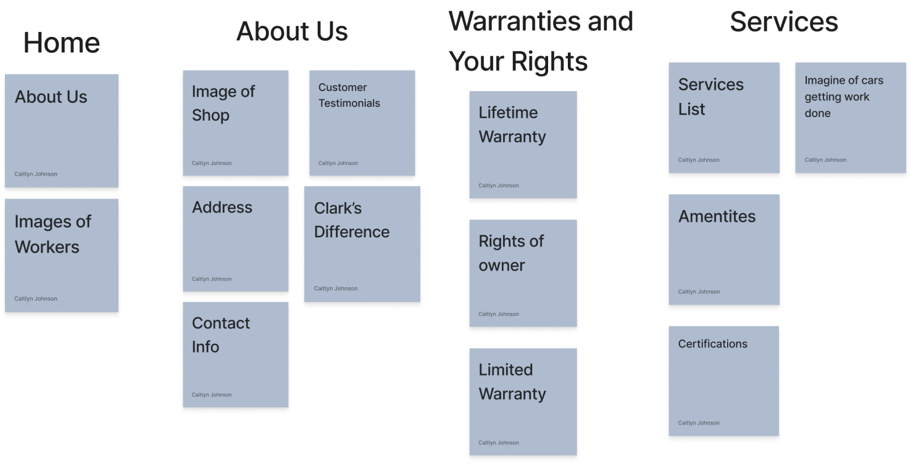
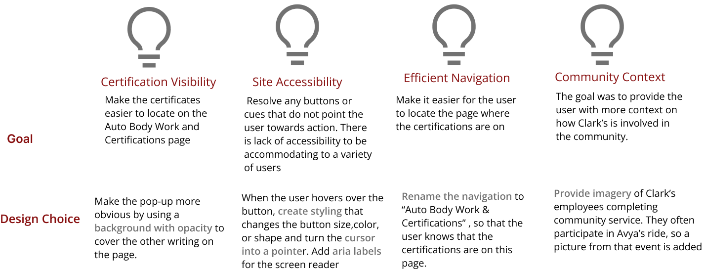

Overview
This was a client facing group that I completed for Introductory Design and Programming for the Web. Clark’s Autobody Repair Shop website was redesigned using the human centered design process.
Role: Client consultant, UX designer, Front end developer
Team:
Tools: javascript, css, html
Timeline: October 2021 - November 2021
Problem
Clarks Auto Body Repair Shop’s website has usability issues, navigation issues, and doesn’t properly fit users needs, so how might we generate user appropriate content in a intuitive user flow?
Solution
A website with clear navigation labeling, relevant content, consistent theme that generates an easy experience for new users of the company.
User Research
Users
Goals
- Discover how they have utilized the current website
- Their pain points when using the website
- Gain a sense of overall client impressions of Clarks’ s Auto Body repair to gain perspective on content and styling
Key Findings
Site Planning and Organization
Card Sort
In order to figure out how to arrange the content in a way that worked for the user we conducted card sorting. We made cards with the most important content for the site and conducted several iterations to find the organization for the users.
Visual Theme
Next we considered various visual themes for our site. Our first idea was to use a red and black theme to generate a sleek look for the website, and in this design a majority of the "white space" would be black. We also were considering a theme that was blue, black, and white to differentiate this auto-body site from one that currently exists on the internet, which would possibly allow the site to stick out. However, we ended up deciding to go with a black and red theme on a white background. This theme would also include easily readable font, as well as, decorative images of the team working to engage the users and build their trust in the shop
Low-fi Iterations
Warranity Page Iterations

Autobody Work and Certifications Page Iterations

About Us Page Iterations

User Testing
The user testing for this website was conducted by having a number of our potential users interact with the coded prototype of the site. As they walked through the site, we watched where they clicked what they struggled with and asked them to talk through their thoughts. From watching our users, we are able to identify which parts of the site are difficult for the users to navigate to and how the layout, color, and interactivity affects the user experience.
Final Design Solution
After finishing this project some of the key takeaways are learning to implement interactivity that improves the user experience. In this project, the reviews section that had interactivity added to it as a view more/less button was not well-designed as it did not improve the user experience. The goal of this interactivity was to decrease the amount of scrolling that a user had to do. This is because the reviews took up a lot of space on the page and were quite repetitive; however, by shorening each indivual review the overall going of deceasing respitivness, and the amount of space that these reviews took up was lost. Therefore, for future project it is important to keep in mind when using javascript that the design of the page we are implementing musst benefit the user in some way.